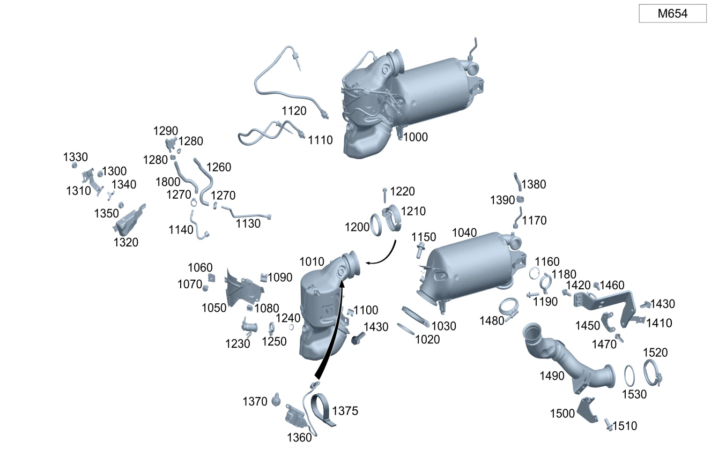

| № | Артикул | Название | Кол. | Примечание | Ограничение |
|---|---|---|---|---|---|
| 170 | A 002 995 47 02 | Трубн. хомут сист.вып. ОГ (PIPE CLAMP, EXHAUST SYS.) | 1 | Катализатор к выпускной трубе спереди | M642/M651/M654+926 |
| 440 | A 000 990 43 37 | Шестигранная гайка (HEXAGON NUT) | 1 | Датчик давления к кронштейну; M6 | M654/M656 |
| 440 | N 000000 008290 | Шестигранная гайка (HEXAGON NUT) | 1 | Датчик давления к кронштейну; M6 | M654/M656 |
| 570 | N 000000 007953 | Винт с 6-гранной головкой (HEXAGON HEAD BOLT) | 2 | Подвеска выпускной системы к заднему мосту; M8X25 | M274/M264/M651/M642/M654/M656 |
| 570 | N 910105 008008 | Винт с 6-гранной головкой (HEXAGON HEAD BOLT) | 2 | Держатель к трубопроводу ОГ; M8X16 | -(M177+M40) |
| 590 | N 000000 003175 | Гайка (NUT) | 1 | Держатель к держателю; M8 | -(M177+M40) |
| 590 | N 000000 008303 | Шестигранная гайка (HEXAGON NUT) | 1 | Держатель к держателю; M8 | -(M177+M40) |
| 660 | A 205 440 91 05 | Электрический жгут (ELECTRICAL WIRING HARNESS) | 1 | Разъем датчика сажи | U77+(460/494)+-(498+L) |
| 740 | A 000 995 30 33 | Проф. хомут сист. вып. ОГ (PROFILE CLAMP, EXH. SYS.) | 1 | Выпускная труба к выпускной трубе сзади | M651/M654/M642/M656 |
| 740 | A 000 995 55 33 | Проф. хомут сист. вып. ОГ (PROFILE CLAMP, EXH. SYS.) | 1 | Выпускная труба к выпускной трубе сзади | M274+-700/M651+926/M654+926 |
| 780 | N 000000 008385 | Винт с 6-гр. глвк (HEXALOBULAR SCREW) | 1 | Крепление кронштейна к кузову; M8X22 | |
| 790 | N 910105 008008 | Винт с 6-гранной головкой (HEXAGON HEAD BOLT) | 2 | Держатель к трубопроводу ОГ; M8X16 | -(M177+M40) |
| 800 | A 231 492 00 44 | Подвес трубопровода ОГ (SUSPENSION, EXH. GAS LINE) | 1 | Сзади | -M177 |
| 1000 | Q 0000000001 | ВАЖНАЯ ИНФОРМАЦИЯ | 1 | Деталь не поставляется, заказывать отдельные детали Рулевое управление: Влево | M654+971 |
| 1000 | A 654 140 14 01 | Трубка выпуска ОГ (EXHAUST GAS LINE) | 1 | Система нейтрализации ОГ Рулевое управление: Вправо [697] ДЕТАЛЬ ПОСТАВЛЯЕТСЯ ТОЛЬКО/ИЛИ ТАКЖЕ КАК ЗАП.ЧАСТЬ | M654+971+-M014 |
| 1000 | A 654 140 15 02 | Трубка выпуска ОГ (EXHAUST GAS LINE) | 1 | Система нейтрализации ОГ Рулевое управление: Вправо [697] ДЕТАЛЬ ПОСТАВЛЯЕТСЯ ТОЛЬКО/ИЛИ ТАКЖЕ КАК ЗАП.ЧАСТЬ | M654+971+-M014 |
| 1000 | Q 0000000001 | ВАЖНАЯ ИНФОРМАЦИЯ | 1 | Деталь не поставляется, заказывать отдельные детали | M654+926 |
| 1010 | A 654 140 82 02 | Трубка выпуска ОГ (EXHAUST GAS LINE) | 1 | Система нейтрализации ОГ [697] ДЕТАЛЬ ПОСТАВЛЯЕТСЯ ТОЛЬКО/ИЛИ ТАКЖЕ КАК ЗАП.ЧАСТЬ | M654+926 |
| 1010 | A 654 140 03 13 | Трубка выпуска ОГ (EXHAUST GAS LINE) | 1 | Система нейтрализации ОГ [697] ДЕТАЛЬ ПОСТАВЛЯЕТСЯ ТОЛЬКО/ИЛИ ТАКЖЕ КАК ЗАП.ЧАСТЬ | M654+926 |
| 1010 | A 654 140 18 01 | Трубка выпуска ОГ (EXHAUST GAS LINE) | 1 | Система нейтрализации ОГ Рулевое управление: Влево [697] ДЕТАЛЬ ПОСТАВЛЯЕТСЯ ТОЛЬКО/ИЛИ ТАКЖЕ КАК ЗАП.ЧАСТЬ | M654+971 |
| 1010 | A 654 140 00 13 | Трубка выпуска ОГ (EXHAUST GAS LINE) | 1 | Система нейтрализации ОГ Рулевое управление: Влево [697] ДЕТАЛЬ ПОСТАВЛЯЕТСЯ ТОЛЬКО/ИЛИ ТАКЖЕ КАК ЗАП.ЧАСТЬ | -971+M654+800 |
| 1020 | A 274 142 00 80 | Полуметал. уплотнение (METAL-SOFT-MATERIAL SEAL) | 1 | Катализатор к сажевому фильтру | M654+926 |
| 1020 | A 274 142 00 80 | Полуметал. уплотнение (METAL-SOFT-MATERIAL SEAL) | 1 | Катализатор к сажевому фильтру Рулевое управление: Влево | M654+971 |
| 1020 | A 274 142 00 80 | Полуметал. уплотнение (METAL-SOFT-MATERIAL SEAL) | 1 | Катализатор к сажевому фильтру Рулевое управление: Влево | -971+M654+800 |
| 1030 | A 000 995 36 33 | Проф. хомут сист. вып. ОГ (PROFILE CLAMP, EXH. SYS.) | 1 | Катализатор к сажевому фильтру | M654+926 |
| 1030 | A 000 995 36 33 | Проф. хомут сист. вып. ОГ (PROFILE CLAMP, EXH. SYS.) | 1 | Катализатор к сажевому фильтру Рулевое управление: Влево | M654+971 |
| 1030 | A 000 995 36 33 | Проф. хомут сист. вып. ОГ (PROFILE CLAMP, EXH. SYS.) | 1 | Катализатор к сажевому фильтру Рулевое управление: Влево | -971+M654+800 |
| 1040 | A 654 140 04 15 | Трубка выпуска ОГ (EXHAUST GAS LINE) | 1 | Сажевый фильтр [697] ДЕТАЛЬ ПОСТАВЛЯЕТСЯ ТОЛЬКО/ИЛИ ТАКЖЕ КАК ЗАП.ЧАСТЬ | M654+926 |
| 1040 | A 654 140 22 01 | DIESEL PARTICULATE FILTER | 1 | Сажевый фильтр Рулевое управление: Влево [697] ДЕТАЛЬ ПОСТАВЛЯЕТСЯ ТОЛЬКО/ИЛИ ТАКЖЕ КАК ЗАП.ЧАСТЬ | M654+971 |
| 1040 | A 654 140 28 00 | DIESEL PARTICULATE FILTER | 1 | Сажевый фильтр Рулевое управление: Влево [697] ДЕТАЛЬ ПОСТАВЛЯЕТСЯ ТОЛЬКО/ИЛИ ТАКЖЕ КАК ЗАП.ЧАСТЬ | -971+M654+800 |
| 1050 | A 654 142 60 00 | Экран защитный (SCREENING PLATE) | 1 | К катализатору Рулевое управление: Вправо | -M014+M654+971 |
| 1050 | A 654 142 60 00 | Экран защитный (SCREENING PLATE) | 1 | К катализатору | M654+926 |
| 1050 | A 654 142 60 00 | Экран защитный (SCREENING PLATE) | 1 | К катализатору Рулевое управление: Вправо | M654+-926+-971 |
| 1050 | A 654 142 60 00 | Экран защитный (SCREENING PLATE) | 1 | К катализатору Рулевое управление: Влево | M654+971 |
| 1050 | A 654 142 60 00 | Экран защитный (SCREENING PLATE) | 1 | К катализатору Рулевое управление: Влево | -971+M654+800 |
| 1060 | A 004 994 14 45 | SPRING NUT (SPRING LOCK NUT) | 2 | Экран к катализатору; M6 Рулевое управление: Вправо | -M014+M654+971 |
| 1060 | A 004 994 14 45 | SPRING NUT (SPRING LOCK NUT) | 1 | Экран к катализатору; M6 Рулевое управление: Влево | -971+M654+800 |
| 1060 | A 004 994 14 45 | SPRING NUT (SPRING LOCK NUT) | 2 | Экран к катализатору; M6 Рулевое управление: Влево | M654+971 |
| 1060 | A 004 994 14 45 | SPRING NUT (SPRING LOCK NUT) | 1 | Экран к катализатору; M6 Рулевое управление: Вправо | M654+-971+-926 |
| 1060 | A 004 994 14 45 | SPRING NUT (SPRING LOCK NUT) | 3 | Экран к катализатору; M6 | M654+926 |
| 1070 | N 000000 004310 | Винт с 6-гранной головкой (HEXAGON HEAD BOLT) | 2 | Экран к катализатору; M6X10 Рулевое управление: Вправо | M654+971 |
| 1070 | N 000000 004310 | Винт с 6-гранной головкой (HEXAGON HEAD BOLT) | 1 | Экран к катализатору; M6X10 Рулевое управление: Влево | -971+M654+800 |
| 1070 | N 000000 004310 | Винт с 6-гранной головкой (HEXAGON HEAD BOLT) | 1 | Экран к катализатору; M6X10 Рулевое управление: Влево | M654+971 |
| 1070 | N 000000 003649 | Винт с 6-гр. глвк (HEXALOBULAR SCREW) | 1 | Экран к катализатору; M6X55 Рулевое управление: Вправо | M654 |
| 1070 | N 000000 004310 | Винт с 6-гранной головкой (HEXAGON HEAD BOLT) | 1 | Экран к катализатору; M6X10 Рулевое управление: Вправо | M654+971 |
| 1070 | N 000000 004310 | Винт с 6-гранной головкой (HEXAGON HEAD BOLT) | 1 | Экран к катализатору; M6X10 | M654+926 |
| 1080 | A 000 991 02 71 | Скоба (CLAMP) | 5 | К экрану; 18X19 MM Рулевое управление: Вправо | -M014+M654+971 |
| 1080 | A 000 991 02 71 | Скоба (CLAMP) | 5 | К экрану; 18X19 MM Рулевое управление: Влево | -971+M654+800 |
| 1080 | A 000 991 02 71 | Скоба (CLAMP) | 5 | К экрану; 18X19 MM Рулевое управление: Влево | M654+971 |
| 1080 | A 000 991 02 71 | Скоба (CLAMP) | 5 | К экрану; 18X19 MM Рулевое управление: Вправо | M654+-926+-971 |
| 1080 | A 012 988 14 78 | Крепежная скоба (FASTENING CLIP) | 1 | К экрану | M654+926 |
| 1080 | A 000 991 02 71 | Скоба (CLAMP) | 1 | К экрану; 18X19 MM | M654+926 |
| 1090 | A 012 988 14 78 | Крепежная скоба (FASTENING CLIP) | 1 | К экрану Рулевое управление: Вправо | -M014+M654+971 |
| 1090 | A 012 988 14 78 | Крепежная скоба (FASTENING CLIP) | 1 | К экрану Рулевое управление: Влево | -971+M654+800 |
| 1090 | A 012 988 14 78 | Крепежная скоба (FASTENING CLIP) | 1 | К экрану Рулевое управление: Влево | M654+971 |
| 1090 | A 012 988 14 78 | Крепежная скоба (FASTENING CLIP) | 1 | К экрану Рулевое управление: Вправо | -971+M654 |
| 1100 | A 008 988 84 78 | Скоба (CLAMP) | 1 | К кронштейну каталитического нейтрализатора ОГ; 18 X 14 MM Рулевое управление: Влево | M654+971 |
| 1100 | A 008 988 84 78 | Скоба (CLAMP) | 1 | К кронштейну каталитического нейтрализатора ОГ; 18 X 14 MM Рулевое управление: Вправо | M654+971 |
| 1100 | A 008 988 84 78 | Скоба (CLAMP) | 1 | К кронштейну каталитического нейтрализатора ОГ; 18 X 14 MM | M654+926 |
| 1110 | A 000 905 96 04 | Датчик температуры (TEMPERATURE SENSOR) | 1 | перед каталитическим нейтрализатором ОГ Рулевое управление: Влево | -971+M654+800 |
| 1110 | A 000 905 96 04 | Датчик температуры (TEMPERATURE SENSOR) | 1 | перед каталитическим нейтрализатором ОГ Рулевое управление: Влево | -M014+M654+971 |
| 1110 | A 000 905 96 04 | Датчик температуры (TEMPERATURE SENSOR) | 1 | перед каталитическим нейтрализатором ОГ Рулевое управление: Вправо | -971+M654 |
| 1110 | A 000 905 96 04 | Датчик температуры (TEMPERATURE SENSOR) | 1 | перед каталитическим нейтрализатором ОГ Рулевое управление: Вправо | -M014+M654+971 |
| 1120 | A 000 905 97 04 | Датчик температуры (TEMPERATURE SENSOR) | 1 | Перед сажевым фильтром Рулевое управление: Влево | -971+M654+800 |
| 1120 | A 000 905 97 04 | Датчик температуры (TEMPERATURE SENSOR) | 1 | Перед сажевым фильтром Рулевое управление: Влево | -M014+M654+971 |
| 1120 | A 000 905 97 04 | Датчик температуры (TEMPERATURE SENSOR) | 1 | Перед сажевым фильтром Рулевое управление: Вправо | -971+M654 |
| 1120 | A 000 905 97 04 | Датчик температуры (TEMPERATURE SENSOR) | 1 | Перед сажевым фильтром Рулевое управление: Вправо | -M014+M654+971 |
| 1130 | A 654 140 06 55 | Напорный трубопровод (PRESSURE LINE) | 1 | После сажевого фильтра Рулевое управление: Вправо | -M014+M654+971 |
| 1130 | A 654 140 06 55 | Напорный трубопровод (PRESSURE LINE) | 1 | После сажевого фильтра Рулевое управление: Влево | -971+M654+800 |
| 1130 | A 654 140 06 55 | Напорный трубопровод (PRESSURE LINE) | 1 | После сажевого фильтра Рулевое управление: Влево | -M014+M654+971 |
| 1130 | A 654 140 06 55 | Напорный трубопровод (PRESSURE LINE) | 1 | После сажевого фильтра Рулевое управление: Вправо | -971+M654 |
| 1140 | A 654 140 01 55 | Напорный трубопровод (PRESSURE LINE) | 1 | Перед сажевым фильтром Рулевое управление: Вправо | -M014+M654+971 |
| 1140 | A 654 140 01 55 | Напорный трубопровод (PRESSURE LINE) | 1 | Перед сажевым фильтром Рулевое управление: Влево | -971+M654+800 |
| 1140 | A 654 140 01 55 | Напорный трубопровод (PRESSURE LINE) | 1 | Перед сажевым фильтром Рулевое управление: Влево | -M014+M654+971 |
| 1140 | A 654 140 01 55 | Напорный трубопровод (PRESSURE LINE) | 1 | Перед сажевым фильтром Рулевое управление: Вправо | -971+M654 |
| 1150 | N 000000 000276 | Винт с 6-гр. глвк (HEXALOBULAR SCREW) | 2 | Между сажевым фильтром и трубопроводом рециркуляции ОГ; M8X20 | M654+926 |
| 1150 | N 000000 000276 | Винт с 6-гр. глвк (HEXALOBULAR SCREW) | 2 | Между сажевым фильтром и трубопроводом рециркуляции ОГ; M8X20 Рулевое управление: Вправо | M654+971 |
| 1150 | N 000000 000276 | Винт с 6-гр. глвк (HEXALOBULAR SCREW) | 2 | Между сажевым фильтром и трубопроводом рециркуляции ОГ; M8X20 Рулевое управление: Влево | M654+971 |
| 1150 | N 000000 000276 | Винт с 6-гр. глвк (HEXALOBULAR SCREW) | 2 | Между сажевым фильтром и трубопроводом рециркуляции ОГ; M8X20 Рулевое управление: Влево | -971+M654+800 |
| 1160 | A 654 142 19 80 | Прокладка, однослойная (METAL SEAL, SINGLE LAYER) | 1 | Между сажевым фильтром и трубопроводом рециркуляции ОГ Рулевое управление: Влево | -971+M654+800 |
| 1160 | A 654 142 19 80 | Прокладка, однослойная (METAL SEAL, SINGLE LAYER) | 1 | Между сажевым фильтром и трубопроводом рециркуляции ОГ Рулевое управление: Влево | -M014+M654+971 |
| 1160 | A 654 142 19 80 | Прокладка, однослойная (METAL SEAL, SINGLE LAYER) | 1 | Между сажевым фильтром и трубопроводом рециркуляции ОГ Рулевое управление: Вправо | -971+M654 |
| 1160 | A 654 142 19 80 | Прокладка, однослойная (METAL SEAL, SINGLE LAYER) | 1 | Между сажевым фильтром и трубопроводом рециркуляции ОГ Рулевое управление: Вправо | -M014+M654+971 |
| 1170 | A 654 140 11 55 | Напорный трубопровод (PRESSURE LINE) | 1 | От сажевого фильтра к датчику давления Рулевое управление: Вправо | -M014+M654+971 |
| 1170 | A 654 140 11 55 | Напорный трубопровод (PRESSURE LINE) | 1 | От сажевого фильтра к датчику давления Рулевое управление: Влево | -971+M654+800 |
| 1170 | A 654 140 11 55 | Напорный трубопровод (PRESSURE LINE) | 1 | От сажевого фильтра к датчику давления Рулевое управление: Вправо | -971+M654 |
| 1170 | A 654 140 11 55 | Напорный трубопровод (PRESSURE LINE) | 1 | От сажевого фильтра к датчику давления Рулевое управление: Влево | -M014+M654+971 |
| 1180 | A 003 995 04 02 | Трубн. хомут сист.вып. ОГ (PIPE CLAMP, EXHAUST SYS.) | 1 | От сажевого фильтра к трубке рециркуляции ОГ | M654 |
| 1190 | A 003 990 47 03 | Винт Torx External (HEXALOBULAR HEAD SCREW) | 1 | От сажевого фильтра к трубке рециркуляции ОГ; M6X25 | M654 |
| 1190 | A 003 990 47 03 | Винт Torx External (HEXALOBULAR HEAD SCREW) | 1 | От сажевого фильтра к трубке рециркуляции ОГ; M6X25 | M654 |
| 1200 | A 000 492 00 00 | Упл. кольцо вып. системы (SEALING RING) | 1 | Катализатор к турбонагнетателю | M654/M656 |
| 1200 | A 000 492 08 81 | Уплотнительное кольцо (SEALING RING) | 1 | Катализатор к выпускной трубе спереди | M642/M651/M654+926 |
| 1210 | A 000 995 89 02 | Трубн. хомут сист.вып. ОГ (PIPE CLAMP, EXHAUST SYS.) | 1 | Катализатор к турбонагнетателю | M654/M656 |
| 1210 | A 002 995 47 02 | Трубн. хомут сист.вып. ОГ (PIPE CLAMP, EXHAUST SYS.) | 1 | Катализатор к выпускной трубе спереди | M642/M651/M654+926 |
| 1220 | A 000 990 46 37 | Винт с 6-гр. глвк (HEXALOBULAR SCREW) | 1 | Катализатор к турбонагнетателю; M8X40 | M654 |
| 1230 | A 000 490 41 00 | Форсунка впрыска восст. (INJECTION NOZZLE) | 1 | AdBlue® | M654+-(828/926) |
| 1240 | A 000 492 01 56 | - Профильное уплотнение (PROFILE SEAL) | 1 | M654+-(826/926) | |
| 1250 | A 000 995 58 33 | Хомут, двухсоставный (PROFILE CLAMP, TWO-PIECE) | 1 | (M654/M656)+-(828/926) | |
| 1260 | A 253 492 03 00 | Шланг выпускной системы (EXHAUST GAS HOSE) | 1 | После сажевого фильтра | (M654/M656)+-926 |
| 1270 | A 006 997 18 90 | Хомут для шланга (HOSE CLAMP) | 2 | Шланг к напорному трубопроводу; 13\-14.5 MM | (M654/M656)+-926 |
| 1280 | A 003 997 87 90 | Хомут для шланга (HOSE CLAMP) | 2 | Шланг к напорному трубопроводу; 13.5 MM | (M654/M656)+-926 |
| 1290 | A 000 905 53 07 | Датчик давления (PRESSURE SENSOR) | 1 | Дифференциальное давление | (M654/M656)+-926 |
| 1290 | A 000 905 65 03 | Датчик давления (PRESSURE SENSOR) | 1 | Дифференциальное давление | (M654/M656)+-926 |
| 1300 | A 000 990 43 37 | Шестигранная гайка (HEXAGON NUT) | 1 | Датчик давления к кронштейну; M6 | M654/M656 |
| 1300 | N 000000 008290 | Шестигранная гайка (HEXAGON NUT) | 1 | Датчик давления к кронштейну; M6 | M654/M656 |
| 1310 | A 253 492 18 00 | Держатель (HOLDER) | 1 | Датчик давления | (M654/M656)+-926 |
| 1320 | A 213 492 04 00 | Термозащитный экран (HEAT SHIELD) | 1 | К датчику давления | (M654/M656)+-926 |
| 1330 | A 000 990 43 37 | Шестигранная гайка (HEXAGON NUT) | 1 | Держатель к держателю; M6 | (M654/M656)+-926 |
| 1330 | N 000000 008290 | Шестигранная гайка (HEXAGON NUT) | 1 | Держатель к держателю; M6 | (M654/M656)+-926 |
| 1340 | A 246 492 06 41 | Держатель (HOLDER) | 1 | Шланг выпускной системы | (M654/M656)+-926 |
| 1340 | A 907 492 65 00 | Держатель | 1 | Шланг выпускной системы | (M654/M656)+-926 |
| 1350 | A 000 990 43 37 | Шестигранная гайка (HEXAGON NUT) | 1 | Держатель к держателю; M6 | (M654/M656)+-926 |
| 1350 | N 000000 008290 | Шестигранная гайка (HEXAGON NUT) | 1 | Держатель к держателю; M6 | (M654/M656)+-926 |
| 1360 | A 000 905 31 19 | Датчик NOx (NOX SENSOR) | 1 | перед каталитическим нейтрализатором ОГ | M654 |
| 1370 | N 910143 006001 | Винт с 6-гр. глвк (HEXALOBULAR SCREW) | 2 | Датчик NOX к каталитическому нейтрализатору ОГ; M6X16 | M654 |
| 1375 | A 000 995 97 06 | Кабельная стяжка (CABLE TIE) | 1 | Перед датчиком NOx; 4.6 X 200 MM | M654 |
| 1380 | A 253 490 32 00 | Трубопровод ОГ пер. (EXHAUST GAS LINE, FRONT) | 1 | От сажевого фильтра к датчику давления Рулевое управление: Вправо | M654+926 |
| 1380 | A 654 141 01 04 | Трубка выпуска ОГ (EXHAUST GAS LINE) | 1 | От сажевого фильтра к датчику давления | M654+-926 |
| 1390 | A 003 997 87 90 | Хомут для шланга (HOSE CLAMP) | 2 | Крепление шлангов выпускной системы; 13.5 MM | M654+-926 |
| 1410 | A 654 142 41 00 | Держатель (HOLDER) | 1 | Сажевый фильтр к блоку цилиндров | M654+926 |
| 1410 | A 654 140 04 02 | Держатель (HOLDER) | 1 | Сажевый фильтр к блоку цилиндров Рулевое управление: Вправо | (M654/M656)+-926 |
| 1410 | A 654 140 51 00 | Держатель (HOLDER) | 1 | Сажевый фильтр к блоку цилиндров Рулевое управление: Вправо | (M654/M656)+-926 |
| 1410 | A 654 142 02 40 | Держатель (HOLDER) | 1 | Сажевый фильтр к блоку цилиндров Рулевое управление: Влево | M654+-926 |
| 1420 | N 000000 000276 | Винт с 6-гр. глвк (HEXALOBULAR SCREW) | 5 | Крепление каталитического нейтрализатора ОГ и сажевого фильтра; M8X20 | M654 |
| 1430 | N 910143 008003 | Винт с 6-гр. глвк (HEXALOBULAR SCREW) | 2 | Держатель к блоку цилиндров; M8X30 | M654+926 |
| 1430 | N 910143 008003 | Винт с 6-гр. глвк (HEXALOBULAR SCREW) | 2 | Держатель к блоку цилиндров; M8X30 Рулевое управление: Влево | M654/M656+-926 |
| 1450 | A 654 142 35 00 | Держатель (HOLDER) | 1 | Дополнительный кронштейн сажевого фильтра | M654+926 |
| 1460 | N 000000 000276 | Винт с 6-гр. глвк (HEXALOBULAR SCREW) | 2 | Дополнительный кронштейн к кронштейну сажевого фильтра; M8X20 | M654+926 |
| 1470 | N 910143 008003 | Винт с 6-гр. глвк (HEXALOBULAR SCREW) | 2 | Дополнительный кронштейн к двигателю; M8X30 | M654+926 |
| 1480 | A 000 995 34 33 | Проф. хомут сист. вып. ОГ (PROFILE CLAMP, EXH. SYS.) | 1 | Сажевый фильтр к выпускной трубе | M654+926 |
| 1490 | A 213 490 29 01 | Трубопровод ОГ пер. (EXHAUST GAS LINE, FRONT) | 1 | От сажевого фильтра к датчику давления Рулевое управление: Влево | M654+926 |
| 1500 | A 213 492 20 00 | Держатель (HOLDER) | 1 | Выпускная система к коробке передач | M654+926 |
| 1510 | N 000000 000276 | Винт с 6-гр. глвк (HEXALOBULAR SCREW) | 2 | Кронштейн к системе выпуска ОГ; M8X20 | M654+926 |
| 1520 | A 003 995 01 02 | Трубн. хомут сист.вып. ОГ (PIPE CLAMP, EXHAUST SYS.) | 1 | Крепление трубопровода ОГ Рулевое управление: Влево | M654/M656 |
| 1520 | A 002 995 47 02 | Трубн. хомут сист.вып. ОГ (PIPE CLAMP, EXHAUST SYS.) | 1 | Крепление трубопровода ОГ Рулевое управление: Вправо | M654/M656 |
| 1530 | A 213 492 15 00 | Упл. кольцо вып. системы (SEALING RING) | 1 | Катализатор к выпускной трубе спереди Рулевое управление: Влево | M654/M656 |
| 1530 | A 000 492 08 81 | Уплотнительное кольцо (SEALING RING) | 1 | Катализатор к выпускной трубе спереди Рулевое управление: Вправо | M654/M656 |
| 1530 | A 000 492 08 81 | Уплотнительное кольцо (SEALING RING) | 1 | Катализатор к выпускной трубе спереди | M642/M651/M654+926 |
| 1540 | A 253 490 53 03 | Трубопровод ОГ пер. (EXHAUST GAS LINE, FRONT) | 1 | Рулевое управление: Влево | (M654/M654+M014)+971 |
| 1540 | A 253 490 54 03 | Трубопровод ОГ пер. (EXHAUST GAS LINE, FRONT) | 1 | Рулевое управление: Вправо | M654+971 |
| 1542 | A 213 906 86 01 | - Регулятор засл.вып.тракт. (EXH. GAS FLAP CONTROLLER) | 1 | (M654/M656) | |
| 1542 | A 213 906 92 10 | - Регулятор засл.вып.тракт. (EXH. GAS FLAP CONTROLLER) | 1 | [440] ОБРАЩАТЬ ВНИМАНИЕ НА ДОПОЛНИТЕЛЬНУЮ ИНФОРМАЦИЮ В WIS | (M654/M656) |
| 1545 | A 000 998 35 07 | - Демпфирующий элемент (DAMPING ELEMENT) | 1 | Для заслонки в выпускном тракте | (M654/M656) |
| 1547 | A 000 990 61 37 | - Винт с 6-гр. глвк (HEXALOBULAR SCREW) | 3 | Крепление сервомеханизма заслонки; M6X16 | (M654/M656) |
| 1560 | A 253 490 57 03 | Трубопровод ОГ пер. (EXHAUST GAS LINE, FRONT) | 1 | M654+926 | |
| 1590 | A 213 491 83 00 | Держатель (HOLDER) | 1 | К лонжерону | (M654/M656)+(700/M008) |
| 1590 | A 213 491 83 00 | Держатель (HOLDER) | 1 | К лонжерону | M654/M656 |
| 1600 | A 213 490 35 02 | Держатель (HOLDER) | 1 | К трубопроводу ОГ | M654/M656/M264/M274 |
| 1610 | N 910105 008008 | Винт с 6-гранной головкой (HEXAGON HEAD BOLT) | 2 | Держатель к продольному несущему элементу; M8X16 | M654/M656 |
| 1620 | A 000 905 18 18 | Датчик NOx (NOX SENSOR) | 1 | M654 | |
| 1630 | A 253 540 65 25 | Электрический жгут (ELECTRICAL WIRING HARNESS) | 1 | 800+(M654/M656)+(927/U79) | |
| 1630 | A 253 540 65 25 | Электрический жгут (ELECTRICAL WIRING HARNESS) | 1 | (M654/M656)+(927/U79) | |
| 1630 | A 253 540 16 27 | Электрический жгут (ELECTRICAL WIRING HARNESS) | 1 | 800+(M654/M656)+(927/U79)+228 | |
| 1630 | A 253 540 16 27 | Электрический жгут (ELECTRICAL WIRING HARNESS) | 1 | (M654/M656)+(927/U79)+228 | |
| 1640 | A 000 990 43 37 | Шестигранная гайка (HEXAGON NUT) | 2 | Крепление блока управления датчика оксидов азота; M6 | (M654/M656)+-926 |
| 1640 | A 000 990 43 37 | Шестигранная гайка (HEXAGON NUT) | 2 | Крепление блока управления датчика оксидов азота; M6 | (M654/M656)+-926 |
| 1640 | N 000000 008290 | Шестигранная гайка (HEXAGON NUT) | 2 | Крепление блока управления датчика оксидов азота; M6 | (M654/M656)+-926 |
| 1650 | A 000 546 20 75 | хомут (CLAMP) | 4 | К экрану; 18.0X18.5 MM | (M654/M656)+-926 |
| 1660 | A 253 540 54 29 | Электрический жгут (ELECTRICAL WIRING HARNESS) | 1 | Заслонка в выпускном тракте средняя | 800+(M654/M656) |
| 1660 | A 253 540 54 29 | Электрический жгут (ELECTRICAL WIRING HARNESS) | 1 | Заслонка в выпускном тракте средняя | M654/M656 |
| 1670 | A 000 905 74 07 | Датчик температуры (TEMPERATURE SENSOR) | 1 | (M654/M656)+971 | |
| 1670 | A 000 905 07 13 | Датчик температуры (TEMPERATURE SENSOR) | 1 | (M654/M656)+971 | |
| 1680 | A 642 151 01 40 | Держатель (HOLDER) | 2 | К экрану | (M654/M656)+971 |
| 1680 | A 642 151 01 40 | Держатель (HOLDER) | 2 | К экрану | (M654/M656)+971 |
| 1690 | A 253 540 84 29 | Электрический жгут (ELECTRICAL WIRING HARNESS) | 1 | Датчик температуры к катализатору Рулевое управление: Влево | 800+971+M654 |
| 1690 | A 253 540 84 29 | Электрический жгут (ELECTRICAL WIRING HARNESS) | 1 | Датчик температуры к катализатору Рулевое управление: Влево | 971+M654 |
| 1690 | A 253 540 85 29 | Электрический жгут (ELECTRICAL WIRING HARNESS) | 1 | Датчик температуры к катализатору Рулевое управление: Вправо | 800+971+M654 |
| 1690 | A 253 540 85 29 | Электрический жгут (ELECTRICAL WIRING HARNESS) | 1 | Датчик температуры к катализатору Рулевое управление: Вправо | 971+M654 |
| 1700 | A 000 995 30 33 | Проф. хомут сист. вып. ОГ (PROFILE CLAMP, EXH. SYS.) | 1 | Выпускная труба к выпускной трубе сзади | M651/M654/M642/M656 |
| 1700 | A 000 995 55 33 | Проф. хомут сист. вып. ОГ (PROFILE CLAMP, EXH. SYS.) | 1 | Выпускная труба к выпускной трубе сзади | M274+-700/M651+926/M654+926 |
| 1760 | A 253 490 20 21 | Трубка выпуска ОГ (EXHAUST GAS LINE) | 1 | Сзади | M654 |
| 1760 | A 253 490 20 21 | Трубка выпуска ОГ (EXHAUST GAS LINE) | 1 | Сзади | M654+(M014/829/498/835/708/821) |
| 1760 | A 253 490 18 21 | Трубка выпуска ОГ (EXHAUST GAS LINE) | 1 | Сзади | M654+-M014 |
| 1760 | A 253 490 18 21 | Трубка выпуска ОГ (EXHAUST GAS LINE) | 1 | Сзади | M654+(829/498/835/708/821)+(800+050/801) |
| 1760 | A 253 490 18 21 | Трубка выпуска ОГ (EXHAUST GAS LINE) | 1 | Сзади | M654+(829/498/835/708/821) |
| 1760 | A 253 490 19 21 | Трубка выпуска ОГ (EXHAUST GAS LINE) | 1 | Сзади | M654+926 |
| 1780 | A 231 492 00 44 | Подвес трубопровода ОГ (SUSPENSION, EXH. GAS LINE) | 1 | Сзади | -M177 |
| 1800 | A 253 492 02 00 | Шланг выпускной системы (EXHAUST GAS HOSE) | 1 | Перед сажевым фильтром | (M654/M656)+-926 |
| 1810 | N 000000 008385 | Винт с 6-гр. глвк (HEXALOBULAR SCREW) | 1 | Крепление кронштейна к кузову; M8X22 | M264/M274/M276/M651+926/M177+M40/M654+926 |
Позиций: 179 · подписано на схемах: 179 · колесо — плавный зум в курсор, перетаскивание — пан, двойной клик — зум, клик по артикулу — скопировать · наведите на строку или цифру на схеме — подсветка связки, клик — закрепить.